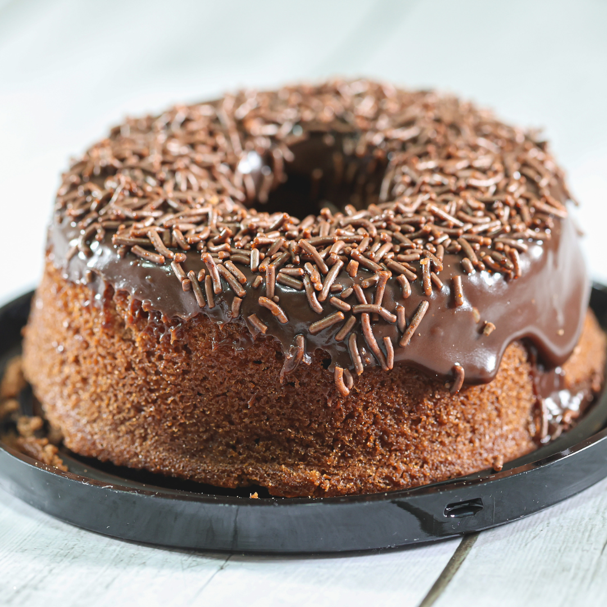

Minha Primeira Receita de Bolo de Chocolate
Lembro com carinho da primeira vez que fiz um bolo de chocolate com minha avó. Ela me ensinou passo a passo, mostrando que paciência e amor são os ingredientes secretos para um bolo perfeito.
Misturamos cuidadosamente os ingredientes frescos, enquanto ela contava histórias da infância e de como suas receitas foram passadas de geração em geração. O aroma doce tomou conta da casa e, ao provar o bolo quentinho, senti que aquele momento se tornaria inesquecível.
Essa experiência foi o começo da paixão pela confeitaria que hoje guia a Bolos, Delícias & Cia, garantindo que cada bolo seja feito com o mesmo carinho e dedicação.